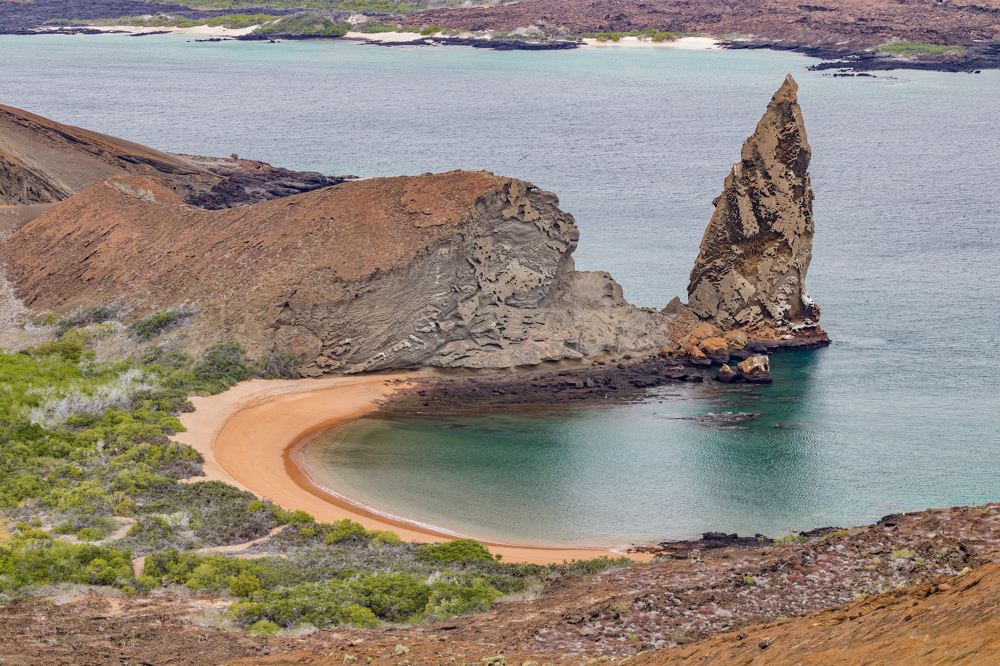
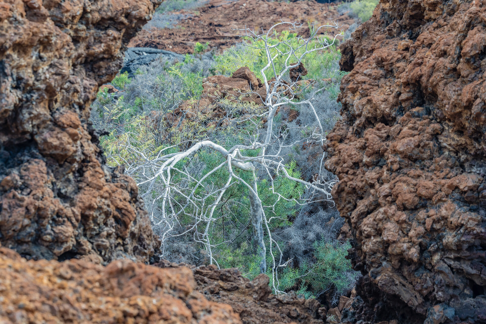
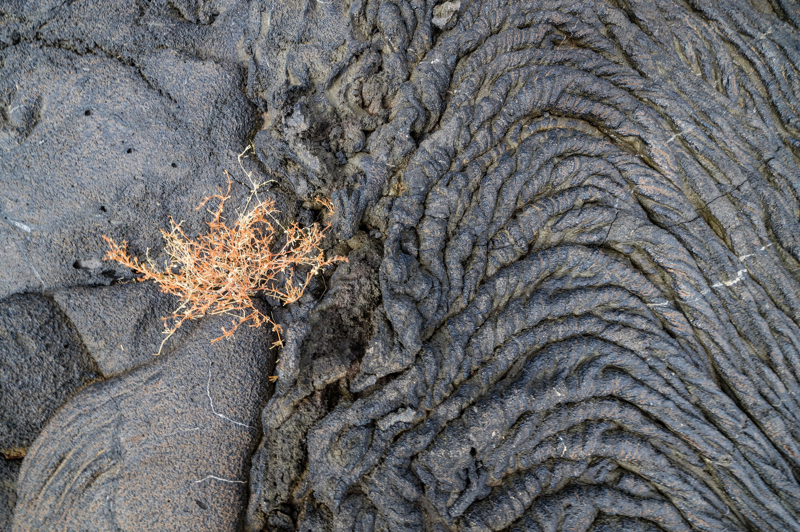
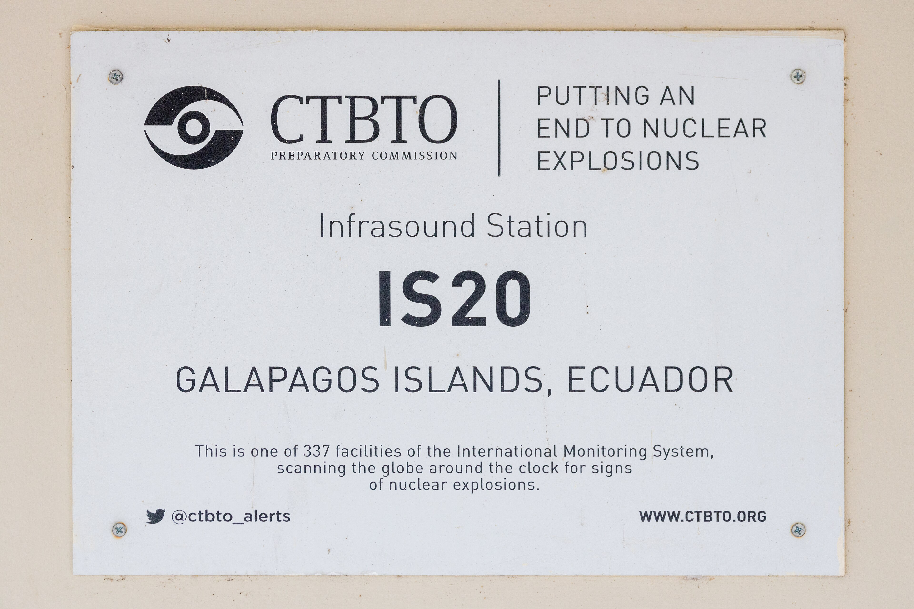
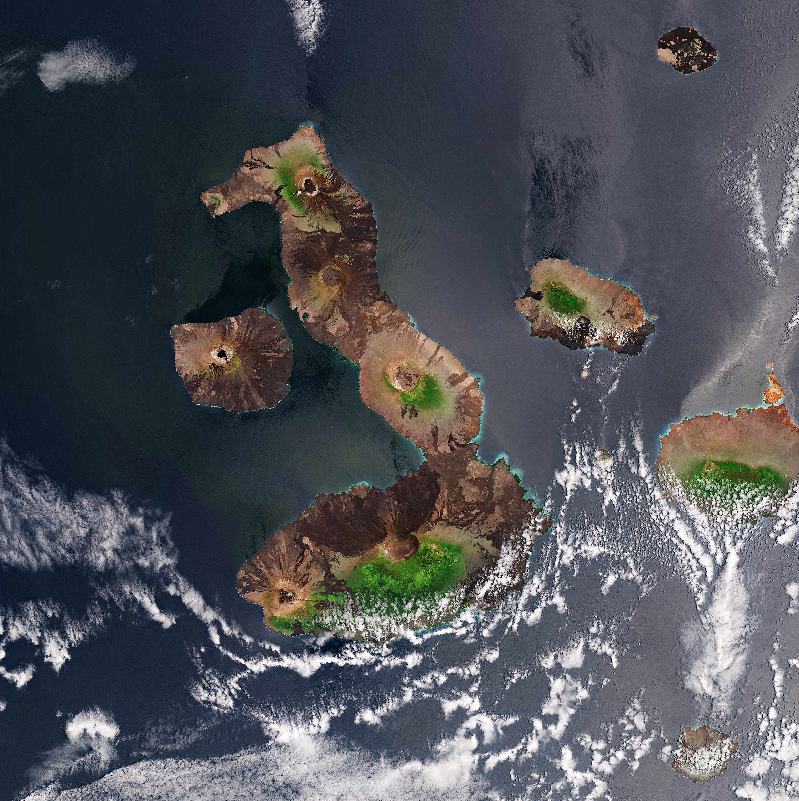

Suspended in the cold Equatorial Pacific, the Galápagos Islands stand as a living laboratory of evolution, a UNESCO World Heritage Site where time seems to move at the pace of the slow-moving giant tortoises.
| Location: | Ecuador, Pacific Ocean, 0.9533° S, 90.9353° W |
| Year of UNESCO Inscription: | 1978 |
| Category: | Natural |
| UNESCO Reference: | 172 |
| Criteria: | (vii)(viii)(ix)(x) |
| Coordinates: | -0.9533, -90.9353 |
| Area: | 7,880 km² (788,000 hectares) |
The Galápagos archipelago is a product of one of the most active volcanic systems on Earth. Located directly above a mantle plume, often referred to as the "hotspot," the islands were formed by the accumulation of lava flows that have built the landmass upward from the ocean floor. The geological history of the archipelago is a dynamic narrative of creation and destruction, with some islands, such as Fernandina and Isabela, still undergoing active eruptions and seismic activity. This volcanic origin provides the raw substrate upon which one of the most unique ecosystems on the planet has developed.

The landscape is characterized by stark contrasts. The "highlands" of the larger islands feature lush, green vegetation sustained by the Inter Tropical Convergence Zone (ITCZ), which brings heavy rains and thick mist. In contrast, the "lowlands" are arid, thorn-scrub environments where water is scarce and the terrain is dominated by black lava flows and sparse vegetation. This dichotomy creates a mosaic of habitats that support a diverse array of endemic species, each adapted to specific microclimates and ecological niches.
The geological youth of the islands means that the topography is still evolving. Fresh lava fields, some less than a few decades old, are dotted with early-stage vegetation. This ongoing geological activity not only shapes the physical environment but also drives the adaptive radiation of species, as organisms must constantly adapt to changing landscapes and new ecological opportunities. The Galápagos thus serves as a real-time model of how life responds to geological change.
The fame of the Galápagos Islands is inextricably linked to Charles Darwin, who visited the archipelago in 1835 during his voyage on the HMS Beagle. Although Darwin did not immediately recognize the significance of his observations, his collection of specimens, particularly the finches and tortoises, provided crucial evidence for his theory of evolution by natural selection. The distinct variations in beak shapes among the finches, adapted to different food sources, became a classic example of adaptive radiation, illustrating how a single ancestral species can diversify to fill various ecological roles.

Darwin’s insights from the Galápagos helped to revolutionize the field of biology, providing a mechanism for biological change that challenged the prevailing view of fixed species. The islands became a pilgrimage site for scientists, who have since documented thousands of endemic species—organisms found nowhere else on Earth. These include the marine iguana, the only iguana species that forages in the sea, and the Galápagos penguin, the only penguin species found in the Northern Hemisphere. The biological uniqueness of the islands has made them a cornerstone of evolutionary biology textbooks and a symbol of the power of natural selection.
The legacy of Darwin extends beyond science to the cultural identity of the islands. The **Charles Darwin Foundation**, established in 1959, plays a pivotal role in conservation and research, ensuring that the scientific heritage of the Galápagos is preserved and studied. The islands are not just a historical curiosity but a living laboratory where the processes of evolution continue to unfold, offering insights into the origins of life and the mechanisms of biodiversity.
The Galápagos Islands are home to an extraordinary array of endemic species, with approximately 30% of the land birds, 96% of the terrestrial reptiles, and 36% of the land mammals found there being unique to the archipelago. This high level of endemism is a result of the islands' long isolation and the diverse habitats provided by their volcanic geology. The Galápagos giant tortoise, Chelonoidis niger, is perhaps the most iconic of these species, with populations on different islands exhibiting distinct shell shapes and sizes, a phenomenon that has made them a symbol of the islands' biological diversity.
The marine ecosystem of the Galápagos is equally remarkable, influenced by the convergence of cold, nutrient-rich waters from the Humboldt Current and warmer currents from the south. This creates a rich feeding ground for marine life, including blue-footed boobies, red-footed boobies, and frigatebirds. The marine iguana, Amblyrhynchus cristatus, is a unique adaptation to this marine environment, having evolved to feed on algae growing on the rocks. Its dark coloration helps it absorb heat from the sun after foraging in the cold waters, a testament to the power of natural selection.
The birdlife of the Galápagos is particularly diverse, with over 400 species recorded, many of which are endemic. The Darwin's finches, comprising thirteen species, are a classic example of adaptive radiation, with each species specialized for a different diet and habitat. The Galápagos penguin, Spheniscus mendiculus, is the only penguin species found in the Northern Hemisphere, thriving in the cooler waters near the islands. The blue-footed booby, Sula nebouxii, is known for its vibrant blue feet, which play a key role in courtship displays, showcasing the intricate behaviors that have evolved in this isolated environment.
Despite their protected status, the Galápagos Islands face significant conservation challenges from both natural and anthropogenic factors. Invasive species pose one of the most serious threats to the endemic wildlife. Species such as goats, pigs, cats, and rats have been introduced by humans, leading to the degradation of habitats and the predation of native species. Efforts to eradicate these invasive species have been ongoing, with significant successes in removing goats from several islands, but the threat remains a persistent concern.

Climate change presents another major threat to the Galápagos ecosystem. Changes in sea surface temperatures and ocean currents can disrupt the delicate balance of the marine environment, affecting the availability of food for marine species. The El Niño phenomenon, which brings warmer waters and reduced nutrient upwelling, can have devastating effects on the marine iguanas and other species that depend on coastal algae. The increasing frequency and intensity of El Niño events, potentially exacerbated by climate change, pose a significant risk to the long-term survival of these species.
Over-tourism is also a growing concern, as the number of visitors to the islands has increased significantly over the past few decades. While tourism provides essential funding for conservation efforts, the presence of large numbers of tourists can lead to habitat disturbance, pollution, and the introduction of invasive species. The Galápagos National Park Service and the Charles Darwin Foundation work to manage visitor numbers and enforce strict regulations to minimize the impact of tourism on the fragile ecosystem. Balancing the economic benefits of tourism with the need for conservation is a complex challenge that requires careful management and international cooperation.
The Galápagos Marine National Park, established in 1998, encompasses a vast area of the surrounding ocean, protecting the rich marine biodiversity of the region. This marine protected area is one of the largest in the world, covering an area of approximately 133,000 square kilometers. The park includes a variety of habitats, from coral reefs and mangrove swamps to deep-sea canyons and seamounts, providing a sanctuary for a wide range of marine species. The protection of this marine environment is crucial for the conservation of the Galápagos' unique marine life, including the marine iguana, sealions, and numerous species of fish and invertebrates.
The buffer zone surrounding the Galápagos Islands, established in 2001, extends the protection to a wider area of the ocean, recognizing the importance of the marine environment to the health of the islands. This buffer zone helps to reduce the impact of external threats, such as overfishing and pollution, on the Galápagos ecosystem. The establishment of the marine national park and the buffer zone has been a significant step in the conservation of the Galápagos, providing a framework for the sustainable management of the marine resources in the region.
The management of the Galápagos National Park is a complex task, involving coordination between multiple agencies and stakeholders. The park is divided into different zones, each with specific regulations regarding access and activities. The core zones are strictly protected, with limited access for research and conservation purposes. The buffer zones allow for sustainable use of resources, such as fishing and tourism, under strict regulations. This zoned approach helps to balance the need for conservation with the economic needs of the local population, ensuring that the Galápagos can be enjoyed by future generations while preserving its unique biodiversity.
The human history of the Galápagos Islands is relatively short, with the first recorded sighting by Fray Tomás de Berlanga in 1535. For centuries, the islands were used as a stopover for whalers and sealers, who exploited the abundant wildlife, leading to the near-extinction of several species, including the Galápagos penguin and the marine iguana. The introduction of livestock, such as goats and pigs, by whalers and settlers further degraded the native vegetation and habitats, leaving a legacy of environmental damage that continues to affect the islands today.

In the mid-19th century, the islands were settled by Charles Darwin and other naturalists, who recognized their scientific significance. The United States Navy also established a coaling station on the islands, further increasing human presence. In 1932, the Ecuadorian government established the Galápagos National Park, recognizing the need to protect the islands' unique biodiversity. The park was designated a UNESCO World Heritage Site in 1978, highlighting its outstanding universal value.
Today, the human population of the Galápagos is concentrated on a few of the inhabited islands, such as Santa Cruz, San Cristóbal, Isabela, and Floreana. The local economy is largely based on tourism, with visitors coming from around the world to experience the islands' unique wildlife and landscapes. The human presence on the islands is carefully managed to minimize its impact on the environment, with strict regulations on land use, waste management, and resource extraction. The balance between human settlement and conservation remains a critical issue for the long-term preservation of the Galápagos.
The Galápagos Islands are a premier destination for scientific research, attracting scientists from around the world to study the unique ecosystems and evolutionary processes at work. The Charles Darwin Foundation and the Galápagos National Park Service collaborate with numerous international institutions to conduct research on a wide range of topics, including evolutionary biology, marine ecology, and conservation genetics. This research not only deepens our understanding of the Galápagos ecosystem but also provides insights into broader ecological and evolutionary principles.

The islands also serve as a crucial educational resource, offering a tangible example of evolutionary theory in action. Visitors and students can observe the adaptive radiation of species, such as the Darwin's finches, and the unique adaptations of the marine iguana and giant tortoises. The Galápagos thus play a vital role in science education, inspiring a new generation of scientists and conservationists. The Charles Darwin Foundation runs a number of educational programs, including schools, research stations, and outreach initiatives, to promote scientific literacy and environmental awareness.
The international cooperation in the study and conservation of the Galápagos is a testament to the global significance of the islands. Organizations such as UNESCO, IUCN, and various national scientific agencies collaborate to support research and conservation efforts. This cooperation helps to ensure that the Galápagos remain a living laboratory for the study of evolution and biodiversity, contributing to our understanding of the natural world and the challenges of conservation in the 21st century.
Explore the lush biodiversity and conservation challenges of South America's largest tropical rainforest.
The Galápagos Islands stand as a testament to the power of evolution and the fragility of natural ecosystems. From the volcanic peaks that shaped their landscape to the unique species that call them home, the islands offer a profound insight into the processes that have driven the diversity of life on Earth. The legacy of Charles Darwin continues to inspire scientific inquiry and conservation efforts, reminding us of the importance of protecting our planet's natural heritage.
As we face the challenges of climate change, invasive species, and over-tourism, the Galápagos serve as a critical example of the need for rigorous conservation and international cooperation. By supporting sustainable tourism and conservation initiatives, we can help ensure that the Galápagos remain a pristine and vibrant ecosystem for future generations, continuing to serve as a living laboratory for the study of evolution and biodiversity.
How many islands are in the Galápagos archipelago?
The Galápagos archipelago consists of 13 larger islands, 6 smaller islands, and over 100 rocks and islets.
Are the Galápagos Islands volcanic?
Yes, the islands are of volcanic origin, formed by the accumulation of lava flows from a mantle plume. Some islands, such as Fernandina and Isabela, are still volcanically active.
What is the most iconic species of the Galápagos?
The Galápagos giant tortoise is often considered the most iconic species, with distinct populations on different islands exhibiting unique shell shapes and sizes.
How do I get to the Galápagos Islands?
Flights to the Galápagos are available from Quito and Guayaquil in Ecuador. Visitors must obtain a transit card and a national park entry permit before traveling.
Are there any restrictions on visiting the islands?
Yes, visitors must follow strict regulations to minimize their impact on the environment. This includes staying on designated trails, maintaining a distance from wildlife, and not removing any natural or cultural items from the islands.
Year of Inscription — 1978
Area — 7,880 km² (788,000 hectares)
Marine Park Area — 133,000 km²
Number of Islands — 13 major, 6 minor, 100+ rocks
Endemic Species — 30% of land birds, 96% of terrestrial reptiles
First Sighted — 1535 by Fray Tomás de Berlanga
Access — Flights from Quito or Guayaquil, Ecuador. No direct international flights.
Best Time to Visit — December to May (warm, wet season) or June to November (cool, dry season).
Permits — National Park Entry Permit (required), Galápagos Transit Control Card (required).
Activities — Hiking, snorkeling, diving, wildlife watching, kayaking, cycling.
What to Bring — Sunscreen (reef-safe), hat, sunglasses, binoculars, camera, insect repellent, swimwear.
Etiquette — Stay on marked trails, maintain a 2-meter distance from wildlife, do not feed animals, do not remove rocks, plants, or shells.
Map showing the location of Galápagos Islands. Coordinates: -0.9533, -90.9353
UNESCO World Heritage Centre — Galápagos Islands: https://whc.unesco.org/en/list/172
IUCN World Heritage Outlook — Galápagos Islands: https://worldheritageoutlook.iucn.org/explore-sites/galapagos-islands
Wikipedia — Galápagos Islands: https://en.wikipedia.org/wiki/Gal%C3%A1pagos_Islands
Charles Darwin Foundation — Galápagos: https://www.darwin.edu.ec/
Galápagos National Park Service — Official Website: https://www.parquesnacionales.gob.ec/